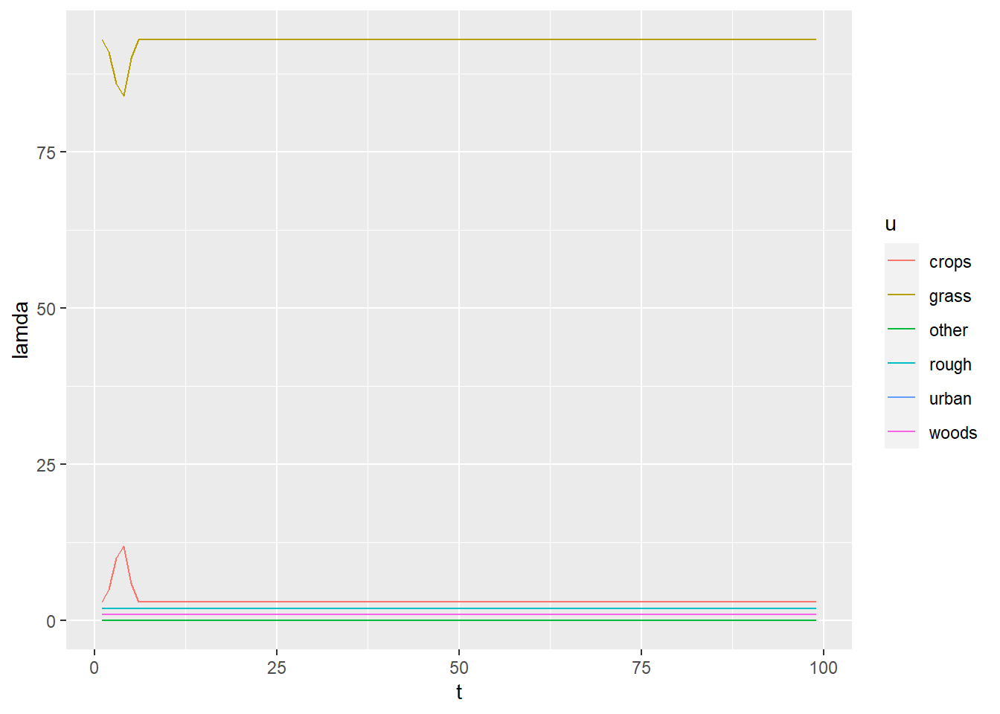

Last updated: 2021-09-14
Checks: 7 0
Knit directory:
luct/
This reproducible R Markdown analysis was created with workflowr (version 1.6.2). The Checks tab describes the reproducibility checks that were applied when the results were created. The Past versions tab lists the development history.
Great! Since the R Markdown file has been committed to the Git repository, you know the exact version of the code that produced these results.
Great job! The global environment was empty. Objects defined in the global environment can affect the analysis in your R Markdown file in unknown ways. For reproduciblity it’s best to always run the code in an empty environment.
The command set.seed(20201104) was run prior to running the code in the R Markdown file.
Setting a seed ensures that any results that rely on randomness, e.g.
subsampling or permutations, are reproducible.
Great job! Recording the operating system, R version, and package versions is critical for reproducibility.
Nice! There were no cached chunks for this analysis, so you can be confident that you successfully produced the results during this run.
Great job! Using relative paths to the files within your workflowr project makes it easier to run your code on other machines.
Great! You are using Git for version control. Tracking code development and connecting the code version to the results is critical for reproducibility.
The results in this page were generated with repository version c6752cc. See the Past versions tab to see a history of the changes made to the R Markdown and HTML files.
Note that you need to be careful to ensure that all relevant files for the
analysis have been committed to Git prior to generating the results (you can
use wflow_publish or wflow_git_commit). workflowr only
checks the R Markdown file, but you know if there are other scripts or data
files that it depends on. Below is the status of the Git repository when the
results were generated:
Ignored files:
Ignored: .Rhistory
Ignored: .Rproj.user/
Ignored: _targets/
Ignored: analysis/life_tables.xlsx
Ignored: analysis/m_lifetables.html
Ignored: analysis/m_lifetables.pdf
Ignored: analysis/m_uqdata.html
Ignored: analysis/m_uqdata.pdf
Ignored: data-raw
Ignored: data/
Ignored: renv/library/
Ignored: renv/local/
Ignored: renv/staging/
Untracked files:
Untracked: R/luct_Fp_Fn.R
Untracked: slurm/runLikU.job
Untracked: slurm/runMCMC_Beta.job
Untracked: slurm/runSampleU.job
Untracked: slurm/runVectors.job
Unstaged changes:
Modified: R/luct.R
Modified: _targets.R
Modified: analysis/m_data_comparison.Rmd
Note that any generated files, e.g. HTML, png, CSS, etc., are not included in this status report because it is ok for generated content to have uncommitted changes.
These are the previous versions of the repository in which changes were made
to the R Markdown (analysis/m_lifetables.Rmd) and HTML (docs/m_lifetables.html)
files. If you’ve configured a remote Git repository (see
?wflow_git_remote), click on the hyperlinks in the table below to
view the files as they were in that past version.
| File | Version | Author | Date | Message |
|---|---|---|---|---|
| html | 352c1b5 | ADCEH | 2021-08-20 | Build site. |
| Rmd | f131d06 | ADCEH | 2021-08-20 | Adding life table explanation text |
This notebooks document the development of using the concept of life tables in modelling land-use change. In the current procedure, we firstly estimate the \(B\) matrix each year by MCMC, then estimate where these land-use changes take place in a separate step. This second step uses static maps of likelihood for each land use. That is, for each year, we have a raster containing the likelihood of a given land-use occuring in each cell. This is based on observed data; if several data sets agree that a given cell is used for crops in a given year, there is a high likelihood of any new cropland being placed there by the algorithm (if it is not already cropland). However, these likelihood maps are static: they vary over time according to the data, but they are the same in every simulation. What this misses is the dependence of land-use change on prior history in the grid cell. There are a few cases where this is important. Most importantly, there is rotational grassland, which is used for arable crops for a number of years, before being returned to grassland on a repeating cycle. Thus, the likelihood of grassland changing to cropland is higher for a four-year old grassland than a 50-year old grassland. This phenomenon is not well captured in the current method. For forests, deforestation may be more likely to occur where the trees are at a commercially harvestable age, so the likelihood of transition is not constant, but peaks at around 40-60 years. More generally, land use shows inertia, and change is less likely where no change has happened before.
To capture such “memory” effects (i.e. that the time since past land-use change affects the likelihood of current land-use change), we can use an approach borrowed from population modelling based on “life tables”. In the population modelling context, life tables are a set of age-specific mortality rates. The same idea is referred to as survival analysis, reliability analysis, ot time-to-event analysis in various domains. Here, we are modelling the “survival” of land under a given continuous usage. Using the population analogy, a forest is “born” when a grid cell is afforested (from any other previous land use), and “dies” when it is deforested (converted to any other previous land use). Similarily, the same applies when areas of other land uses are created or destroyed. We can think of this as six populations (woods, cropland, grassland, rough grazing, urban or other land uses), each of which has a specific life table. In this context, rather than mortality rates, the life table is the set of age-specific probabilities of conversion to other uses. So rather than a single dimension, each life table has six columns, for the probabilities to conversion to each of the five other land uses, plus the probability of remaining unchanged.
To illustrate the idea, we can make up some dummy data which shows how this might work.
The life table for grassland over the first ten years might look like the below. The mortality/transition probabilities are usually denoted \(\lambda\).
knitr::kable(data.frame(time = 1:10, a_lamda[1:10, u_from, 1:n_u]))| time | woods | crops | grass | rough | urban | other |
|---|---|---|---|---|---|---|
| 1 | 0.01 | 0.03 | 0.93 | 0.02 | 0.01 | 0 |
| 2 | 0.01 | 0.05 | 0.91 | 0.02 | 0.01 | 0 |
| 3 | 0.01 | 0.10 | 0.86 | 0.02 | 0.01 | 0 |
| 4 | 0.01 | 0.12 | 0.84 | 0.02 | 0.01 | 0 |
| 5 | 0.01 | 0.06 | 0.90 | 0.02 | 0.01 | 0 |
| 6 | 0.01 | 0.03 | 0.93 | 0.02 | 0.01 | 0 |
| 7 | 0.01 | 0.03 | 0.93 | 0.02 | 0.01 | 0 |
| 8 | 0.01 | 0.03 | 0.93 | 0.02 | 0.01 | 0 |
| 9 | 0.01 | 0.03 | 0.93 | 0.02 | 0.01 | 0 |
| 10 | 0.01 | 0.03 | 0.93 | 0.02 | 0.01 | 0 |
This shows that grassland will typically remain grassland, but that it has a higher chance of being converted to cropland in years 2-5. The chance of other conversions remains constant. For efficient computation, we can store the \(\lambda\) values in a three-dimensional array, which allows us to access the values, referencing by index.
# e.g. if we want to know the prob of 4-y old grass turning to crop
t = 4; u_from = 3; u_to = 2
a_lamda[t, u_from, u_to][1] 0.12We can plot the grassland dummy data as an example.
df <- df3
df$u <- NULL
df$t <- as.numeric(rownames(df))
df <- pivot_longer(df,
cols = woods:other,
names_to = "u",
values_to = "lamda")
p <- ggplot(df, aes(t, lamda, colour = u))
p <- p + geom_line()
#p <- p + facet_wrap(~ u, scale = "fixed")
p
To use this idea in the LUC Tracking project, there are several steps required.
Establish the life tables, based on observed data. This requires writing functions to extract and analyse all the “life spans” in a set of vectors or \(U\) stack object. This means counting frequency distribution of all the length of all contiguous land uses.
Establishing the age-of-land-use for the starting point map (2019).
Adapting the code in DA4_SampleU.Rmd to use the life tables dynamically to calculate the likelihoods \(\mathcal{L}\) in sampling \(U\), going back in time from 2019. Previously, this was done in a single step in DA3_LikelihoodU.Rmd, to calculate a number of static maps. This would now need to be done dynamically, muliplying the spatial likelihood term \(\mathcal{L}_\mathrm{static}\) with the dynamic likelihood term \(\mathcal{L}_\mathrm{dynamic}\) (depending on the age of the current land use). Because \(\mathcal{L}_\mathrm{dynamic}\) depends only on the age (and not the whole previous history), we simply need to update a raster containing the age of each land use each year. This will start with the estimate from step 2 and work backwards.
Computation time (excl. render): 2.59 sec elapsed
sessionInfo()R version 4.0.4 (2021-02-15)
Platform: x86_64-w64-mingw32/x64 (64-bit)
Running under: Windows 10 x64 (build 17763)
Matrix products: default
locale:
[1] LC_COLLATE=English_United Kingdom.1252
[2] LC_CTYPE=English_United Kingdom.1252
[3] LC_MONETARY=English_United Kingdom.1252
[4] LC_NUMERIC=C
[5] LC_TIME=English_United Kingdom.1252
attached base packages:
[1] stats graphics grDevices datasets utils methods base
other attached packages:
[1] here_1.0.1 tictoc_1.0.1 readxl_1.3.1 abind_1.4-5 ggplot2_3.3.5
[6] tidyr_1.1.3 dplyr_1.0.7
loaded via a namespace (and not attached):
[1] Rcpp_1.0.7 highr_0.9 cellranger_1.1.0 pillar_1.6.2
[5] compiler_4.0.4 bslib_0.2.5.1 later_1.2.0 jquerylib_0.1.4
[9] git2r_0.28.0 workflowr_1.6.2 tools_4.0.4 digest_0.6.27
[13] gtable_0.3.0 jsonlite_1.7.2 evaluate_0.14 lifecycle_1.0.0
[17] tibble_3.1.3 pkgconfig_2.0.3 rlang_0.4.11 yaml_2.2.1
[21] xfun_0.25 withr_2.4.2 stringr_1.4.0 knitr_1.33
[25] generics_0.1.0 fs_1.5.0 vctrs_0.3.8 sass_0.4.0
[29] grid_4.0.4 rprojroot_2.0.2 tidyselect_1.1.1 glue_1.4.2
[33] R6_2.5.0 fansi_0.5.0 rmarkdown_2.10 bookdown_0.23
[37] farver_2.1.0 purrr_0.3.4 magrittr_2.0.1 whisker_0.4
[41] scales_1.1.1 promises_1.2.0.1 ellipsis_0.3.2 htmltools_0.5.1.1
[45] colorspace_2.0-2 renv_0.14.0 httpuv_1.6.1 labeling_0.4.2
[49] utf8_1.2.2 stringi_1.7.3 munsell_0.5.0 crayon_1.4.1